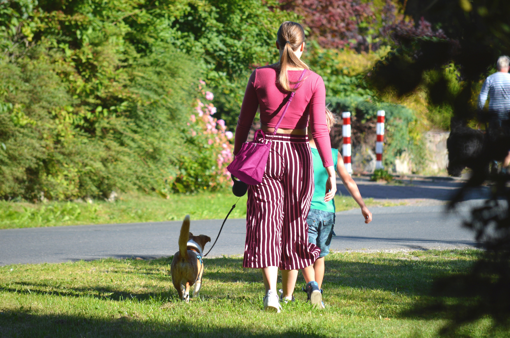

Ruhiges & modernes Hundetraining in Wien
Dein Hund zieht, bellt oder hört nicht zuverlässig?
Ich helfe dir, Alltagssituationen ruhig und klar zu lösen – ohne Druck oder Stress.
Jetzt kostenloses Erstgespräch sichernKostenlos • unverbindlich • individuell
Typische Probleme im Alltag
Mein Ansatz im Hundetraining
Ich arbeite im echten Alltag – nicht im Trainingsraum. Ziel ist ein Hund, der dich versteht und sich an dir orientiert.
Warum dieses Training funktioniert
Hunde lernen durch Klarheit, Struktur und richtiges Timing – nicht durch Druck.
Bereit für entspannte Spaziergänge?
Starte jetzt mit individuellem Hundetraining in Wien.
Jetzt kostenloses Erstgespräch starten